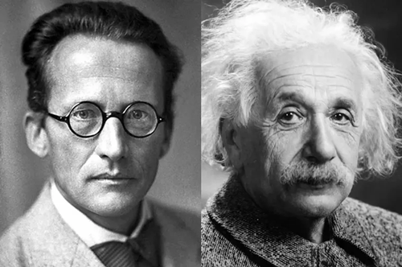

خلاف اينشتاين [1] [2]
في عام 1905، ساعد أينشتاين نظرية الكم مع اكتشافه بأن الضوء يملك طبيعة مزدوجة (موجة والجسيم في نفس الوقت) ،و اوضح نيلز بور لاحق بأن هذه “الطبيعة المزدوجة ”تعتمد على كيفية مراقبة الضوء،حيث نرى إما موجة أو سلوك جُسيمي .
أما بالنسبة إلى دي بروي فقد طرح فكرة جديدة وغريبة، إذا كانت الموجات تتصرف كجسيمات، فربما تكون الجسيمات أيضا تتصرف كموجات .
كان أينشتاين أول من أيّد علنا فرضية بروي الجريئة، وبحلول عام 1926، وضع إروين شرودنغر صيغة رياضية لوصف الطبيعة المزدوجة “موجة-جسيم”، التي وصفها بأنها نوع من البحر المتلألئ للجسيمات المنتشرة”.

لم تلقى هذه الأفكار آعجاب آينشتاين بأن كل شيء من حولنا ما هو إلا مجموعة من الاحتمالات حاول اينشتاين ان يجد ثغرة في ميكانيكا الكم و طرح في احد المرات بأن لو قمنا بتجربة احضرنا فيها إلكترونين و التي تمتلك خاصية الدوران \(ٍSpin\) من مصدر واحد أي أن عزمهم الدوراني يساوي صفر فهذا يعني بأن الالكترونين يجب دائما أن يدوروا في اتجاهات مختلفة و وضعنا كل إلكترون في صندوق فإذا كانت ميكانيكا الكم على صواب و أن الالكترون يدور في جميع الاتجاهات فهذا يعطي نتيجة عشوائية عند فتح الصندوق أي أنه من الممكن أن من خلال الاحتمالات أن يدور الالكترونين في نفس الاتجاه وهذا ينافي قانون بقاء العزم الزاوي
فسر علماء فيزياء ميكانيكا الكم هذه التجربة حيث قالوا بأن قانون العزم الزاوي صحيحة و أن الالكترونين يدورا في اتجاه معاكس للآخر و ان هنالك تشابك خفي بين هذين الالكترونين و ما سمي لاحقا التشابك الكمي لم تلقى هذه الأفكار آعجاب اينشتاين حيث حاول أن يفسر ما يحدث عن طريق افتراض أن هذه إعدادات مسبقة من خلال فكرة شبيهة بأن تحضر زوجًا من القفازات ، وأن تضع كل واحد منهما في صندوق، فإذا فتحت احد الصناديق و رأيت القفاز الأيمن فإنك ستعلم حتما أن الصندوق الآخر يحوي القفاز الايسر، وان هذا لا يعتمد على الاحتمالات حيث أنهم كانا بنفس الحالة طوال الوقت . بقي هذا الخلاف لفترة طويلة من الزمن